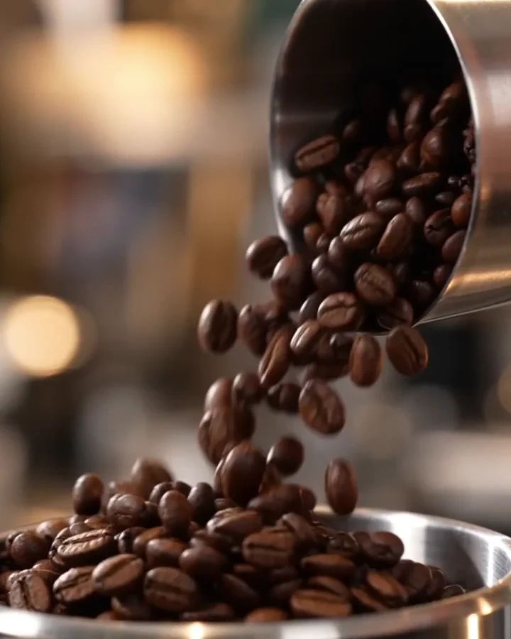
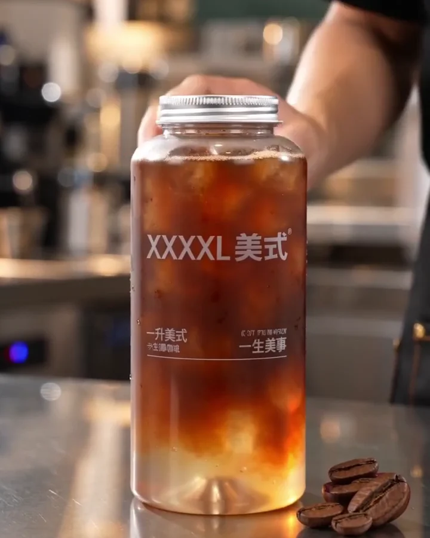

01
概念建立
从咖啡原料与产品特征出发，确定暖色、清爽、具有商业摄影质感的视觉方向。
从产品定位与视觉方向出发，
通过关键画面的筛选与镜头设计，
逐步建立广告的节奏与视觉语言。

从咖啡原料与产品特征出发，确定暖色、清爽、具有商业摄影质感的视觉方向。
通过液体流动、玻璃反射和冷凝水珠，强化产品的新鲜感与视觉吸引力。

将产品作为最终视觉中心，通过稳定构图完成商业广告的产品展示与收尾。
Production Flow
ChatGPT · Midjourney · Runway · CapCut
12s · AI辅助创作